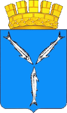

Моя первая веб-страница учебный проект
Про меня
Меня зовут Пётр. Я работаю рабочим.
Решил изучить IT (Information Technology) профессию,
чтобы разобраться как устроен веб.
великой русской реки Волга.
Современный герб Саратова  Общественное достояние
Саратов — многофункциональный центр с многочисленными промышленными,
культурными, образовательными учреждениями.
В историческом центре находятся администрация города и области
(комплекс зданий, построенных в конце XIX — середине XX века);
театры: оперы и балета (1875), драмы (1803), юного зрителя (1918),
консерватория (1912), цирк (1876), филармонии (1937);
музеи: Саратовский художественный музей имени А. Н. Радищева (1884),
Музей К. А. Федина[10] (здание начала XVIII века),
музей-усадьба Николая Чернышевского (начало XIX века);
Троицкий собор (конец XVII века);
большое количество памятников архитектуры
конца XVIII — начала XX веков
федерального и регионального значения.
Является ведущим центром высшего образования,
научно-исследовательской и проектной деятельности.
Помимо одного из старейших университетов России, функционирует
более двух десятков вузов.
Развиты машиностроение, нефтяная и химическая
промышленность.
Указом Президента Российской Федерации от 2 июля 2020 городу
было присвоено звание Город трудовой доблести
Чему я хочу научиться
На этом курсе я хотел бы научиться создавать сайты с нуля.